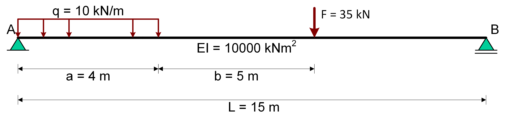

SymPy example for Structural Mechanics problems
Contents
SymPy example for Structural Mechanics problems#
With SymPy, a very powerfull computer algebra tool, mechanics problems can be solved in an easy and fast way. It will take over the cumbersome handcalculations. However the engineering part; the thinking, the modelling and the correct input of the specifications still remains a human matter.
A simple beam is taken as an example. The beam is loaded with a uniform load q on a part of the beam and a force F. All loads are considered to be static loads. The beam is a prismatic beam with a bending stiffness EI.

With SymPy the beam deflections and the moment and shear distribution along the beam axis will be computed. The model used is the beam-model which can be discribed with the fourth order differential equation (DE):
\(EI{{{d^4}w} \over {d{x^4}}} = q\left( x \right)\)
The solution of the problem can only be found with the correct boundary conditions. In this simple case the four required boundary conditions are:
\(w(0)=0\)
\(M(0)=0\)
\(w(L)=0\)
\(M(L)=0\)
The DE is only valid for domains were the load distibution is continuous differentiable. If the problem is worked out by hand we should have to split the problem in to three domains. Each discontinuity in the loading or the beamproperties urges for a split. Each domain requires four boundary conditions. This would result in 12 boundary conditions. Four of these conditions
are specified on the outer boundaries of the problem, the other eight are specified on the two connections between the three domains. If we solve this problem with SymPy (see Alternative implementation ) however this approach is not necessary. If the load can be specified as one continous differentiable function along the total beam axis we can model the beam as one domain.
How can we describe the load as one function which is valid for the total beam length? The uniform load q can be modelled with a sympy.Heaviside function (step function, see Calculus page 49 and 95) and the force F can be modelled with a sympy.DiracDelta or δ-function. Both functions can be found in the standard mathematics text books or in the help of SymPy.
In SymPy the modelling of the load looks like this (the 35 kN is not visible in the plot):
import sympy as sp
w = sp.symbols('w', cls=sp.Function)
x = sp.symbols('x')
C1, C2, C3, C4 = sp.symbols('C1 C2 C3 C4')
Q = 10
L = 15
a = 4
b = 5
F = 35
q = Q*(1 - sp.Heaviside(x-a))+F*sp.DiracDelta(x-(a+b))
display(q)
sp.plot(q,(x,0,L));
In the plot of the load function q the force F is not visible. However the load exists, this can
seen by calculating the total load with the integral of the load function.
The differential equation can now be specified and solved with SymPy:
EI = 10000
diffeq = sp.Eq(EI*sp.diff(w(x),x,4),q)
w = sp.dsolve(diffeq)
w = w.rhs
To store the general solution w(x) in a simple the function denoted with the variable w, we use the righthandside function .rhs. This means the right hand side of the resulting sp.dsolve operation is stored in the variable w.
phi = -sp.diff(w,x)
kappa = sp.diff(phi,x)
M = EI * kappa
V = sp.diff(M,x)
Eq1 = sp.Eq(w.subs(x,0),0)
Eq2 = sp.Eq(w.subs(x,L),0)
Eq3 = sp.Eq(M.subs(x,0),0)
Eq4 = sp.Eq(M.subs(x,L),0)
sol = sp.solve((Eq1,Eq2,Eq3,Eq4),(C1,C2,C3,C4))
w = w.subs(sol)
The boundary conditions are specified with four equations eq1 … eq4 which have to be solved with the sp.solve command. The solution of the integration constants has to be substituted in our general solution with .subs.
The results of the calculation can best be viewed with a plot.
sp.plotting.plot(w,(x,0,L));
The moment and shear distribution can be found with the known relations between the moment and the displacement field and the moment and the shear forces.
M = M.subs(sol)
sp.plotting.plot(M,(x,0,L));
V = V.subs(sol)
sp.plotting.plot(V,(x,0,L));
---------------------------------------------------------------------------
KeyError Traceback (most recent call last)
~\Anaconda3\lib\site-packages\sympy\core\evalf.py in evalf(x, prec, options)
1493 try:
-> 1494 rf = evalf_table[type(x)]
1495 r = rf(x, prec, options)
KeyError: meijerg
During handling of the above exception, another exception occurred:
KeyboardInterrupt Traceback (most recent call last)
~\AppData\Local\Temp\ipykernel_7524\2694101761.py in <module>
1 V = V.subs(sol)
----> 2 sp.plotting.plot(V,(x,0,L));
~\Anaconda3\lib\site-packages\sympy\plotting\plot.py in plot(show, *args, **kwargs)
1852 plots = Plot(*series, **kwargs)
1853 if show:
-> 1854 plots.show()
1855 return plots
1856
~\Anaconda3\lib\site-packages\sympy\plotting\plot.py in show(self)
238 self._backend.close()
239 self._backend = self.backend(self)
--> 240 self._backend.show()
241
242 def save(self, path):
~\Anaconda3\lib\site-packages\sympy\plotting\plot.py in show(self)
1531
1532 def show(self):
-> 1533 self.process_series()
1534 #TODO after fixing https://github.com/ipython/ipython/issues/1255
1535 # you can uncomment the next line and remove the pyplot.show() call
~\Anaconda3\lib\site-packages\sympy\plotting\plot.py in process_series(self)
1528 if isinstance(self.parent, PlotGrid):
1529 parent = self.parent.args[i]
-> 1530 self._process_series(series, ax, parent)
1531
1532 def show(self):
~\Anaconda3\lib\site-packages\sympy\plotting\plot.py in _process_series(self, series, ax, parent)
1353 # Create the collections
1354 if s.is_2Dline:
-> 1355 x, y = s.get_data()
1356 if (isinstance(s.line_color, (int, float)) or
1357 callable(s.line_color)):
~\Anaconda3\lib\site-packages\sympy\plotting\plot.py in get_data(self)
592 """
593 np = import_module('numpy')
--> 594 points = self.get_points()
595 if self.steps is True:
596 if len(points) == 2:
~\Anaconda3\lib\site-packages\sympy\plotting\plot.py in get_points(self)
770 x_coords.append(self.start)
771 y_coords.append(f_start)
--> 772 sample(np.array([self.start, f_start]),
773 np.array([self.end, f_end]), 0)
774
~\Anaconda3\lib\site-packages\sympy\plotting\plot.py in sample(p, q, depth)
739 elif depth < 6:
740 sample(p, new_point, depth + 1)
--> 741 sample(new_point, q, depth + 1)
742
743 # Sample ten points if complex values are encountered
~\Anaconda3\lib\site-packages\sympy\plotting\plot.py in sample(p, q, depth)
738 # depth of 6. We are not using linspace to avoid aliasing.
739 elif depth < 6:
--> 740 sample(p, new_point, depth + 1)
741 sample(new_point, q, depth + 1)
742
~\Anaconda3\lib\site-packages\sympy\plotting\plot.py in sample(p, q, depth)
738 # depth of 6. We are not using linspace to avoid aliasing.
739 elif depth < 6:
--> 740 sample(p, new_point, depth + 1)
741 sample(new_point, q, depth + 1)
742
~\Anaconda3\lib\site-packages\sympy\plotting\plot.py in sample(p, q, depth)
738 # depth of 6. We are not using linspace to avoid aliasing.
739 elif depth < 6:
--> 740 sample(p, new_point, depth + 1)
741 sample(new_point, q, depth + 1)
742
~\Anaconda3\lib\site-packages\sympy\plotting\plot.py in sample(p, q, depth)
739 elif depth < 6:
740 sample(p, new_point, depth + 1)
--> 741 sample(new_point, q, depth + 1)
742
743 # Sample ten points if complex values are encountered
~\Anaconda3\lib\site-packages\sympy\plotting\plot.py in sample(p, q, depth)
739 elif depth < 6:
740 sample(p, new_point, depth + 1)
--> 741 sample(new_point, q, depth + 1)
742
743 # Sample ten points if complex values are encountered
~\Anaconda3\lib\site-packages\sympy\plotting\plot.py in sample(p, q, depth)
727 else:
728 xnew = p[0] + random * (q[0] - p[0])
--> 729 ynew = f(xnew)
730 new_point = np.array([xnew, ynew])
731
~\Anaconda3\lib\site-packages\sympy\plotting\experimental_lambdify.py in __call__(self, args)
174 try:
175 #The result can be sympy.Float. Hence wrap it with complex type.
--> 176 result = complex(self.lambda_func(args))
177 if abs(result.imag) > 1e-7 * abs(result):
178 return None
~\Anaconda3\lib\site-packages\sympy\plotting\experimental_lambdify.py in __call__(self, *args, **kwargs)
270
271 def __call__(self, *args, **kwargs):
--> 272 return self.lambda_func(*args, **kwargs)
273
274
<string> in <lambda>(x0)
~\Anaconda3\lib\site-packages\sympy\core\evalf.py in evalf(self, n, subs, maxn, chop, strict, quad, verbose)
1656 options['quad'] = quad
1657 try:
-> 1658 result = evalf(self, prec + 4, options)
1659 except NotImplementedError:
1660 # Fall back to the ordinary evalf
~\Anaconda3\lib\site-packages\sympy\core\evalf.py in evalf(x, prec, options)
1498 if 'subs' in options:
1499 x = x.subs(evalf_subs(prec, options['subs']))
-> 1500 xe = x._eval_evalf(prec)
1501 if xe is None:
1502 raise NotImplementedError
~\Anaconda3\lib\site-packages\sympy\functions\special\hyper.py in _eval_evalf(self, prec)
691
692 with mpmath.workprec(prec):
--> 693 v = mpmath.meijerg(ap, bq, z, r)
694
695 return Expr._from_mpmath(v, prec)
~\Anaconda3\lib\site-packages\mpmath\functions\hypergeometric.py in meijerg(ctx, a_s, b_s, z, r, series, **kwargs)
1056 terms.append((bases, expts, gn, gd, hn, hd, hz))
1057 return terms
-> 1058 return ctx.hypercomb(h, a+b, **kwargs)
1059
1060 @defun_wrapped
~\Anaconda3\lib\site-packages\mpmath\functions\hypergeometric.py in hypercomb(ctx, function, params, discard_known_zeros, **kwargs)
123 #for b in beta_s: v *= ctx.rgamma(b)
124 #for w, c in zip(w_s, c_s): v *= ctx.power(w, c)
--> 125 v = ctx.fprod([ctx.hyper(a_s, b_s, z, **kwargs)] + \
126 [ctx.gamma(a) for a in alpha_s] + \
127 [ctx.rgamma(b) for b in beta_s] + \
~\Anaconda3\lib\site-packages\mpmath\functions\hypergeometric.py in hyper(ctx, a_s, b_s, z, **kwargs)
224 elif q == 0: return ctx._hyp1f0(a_s[0][0], z)
225 elif p == 2:
--> 226 if q == 1: return ctx._hyp2f1(a_s, b_s, z, **kwargs)
227 elif q == 2: return ctx._hyp2f2(a_s, b_s, z, **kwargs)
228 elif q == 3: return ctx._hyp2f3(a_s, b_s, z, **kwargs)
~\Anaconda3\lib\site-packages\mpmath\functions\hypergeometric.py in _hyp2f1(ctx, a_s, b_s, z, **kwargs)
441 if absz <= 0.8 or (ctx.isint(a) and a <= 0 and a >= -1000) or \
442 (ctx.isint(b) and b <= 0 and b >= -1000):
--> 443 return ctx.hypsum(2, 1, (atype, btype, ctype), [a, b, c], z, **kwargs)
444
445 orig = ctx.prec
~\Anaconda3\lib\site-packages\mpmath\ctx_mp.py in hypsum(ctx, p, q, flags, coeffs, z, accurate_small, **kwargs)
712 else:
713 mag_dict = {}
--> 714 zv, have_complex, magnitude = summator(coeffs, v, prec, wp, \
715 epsshift, mag_dict, **kwargs)
716 cancel = -magnitude
~\Anaconda3\lib\site-packages\mpmath\libmp\libhyper.py in hypsum_2_1_RR_R_R(coeffs, z, prec, wp, epsshift, magnitude_check, **kwargs)
KeyboardInterrupt:
Alternative implementation with Singularity Functions#
As you may have noticed, the evaluation of the result of the Heaviside and DiracDelta function takes a while. An alternative implementation is to make use of the SingularityFunction, which evaluates down to the Heaviside function for \(n = 0\) and the DiracDelta function for \(n=1\):
$\(\matrix{
n & {{{\langle x - a\rangle }^n}} & {{\text{Physical meaning}}} \cr
{ - 2} & {{\kern 1pt} {d \over {dx}}\delta \left( {x - a} \right){\kern 1pt} {\kern 1pt} } & {{\text{Unit moment at }}x = a} \cr
{ - 1} & {\delta \left( {x - a} \right)} & {{\text{Unit force at }}x = a} \cr
0 & {H\left( {x - a} \right){\kern 1pt} } & {{\text{Start distributed load at }}x = a} \cr
1 & {\left( {x - a} \right)H\left( {x - a} \right){\kern 1pt} } & {{\text{Start linear distributed load at }}x = a} \cr
{ > 0} & {{{\left( {x - a} \right)}^n}H\left( {x - a} \right)} & {{\text{Start polynomial at }}x = a} \cr } \)$
These functions are easily integrated according to the following rules: $\(\int {{{\left\langle {x - a} \right\rangle }^n}dx} = \left\{ {\matrix{ {{{\left\langle {x - a} \right\rangle }^{n + 1}}} & {{\text{if }}n < 0} \cr {{{{{\left\langle {x - a} \right\rangle }^{n + 1}}} \over {n + 1}}} & {{\text{if }}n \ge 0} \cr } } \right.\)$
import sympy as sp
w = sp.symbols('w', cls=sp.Function)
x = sp.symbols('x')
C1, C2, C3, C4 = sp.symbols('C1 C2 C3 C4')
Q = 10
L = 15
a = 4
b = 5
F = 35
q = Q*sp.SingularityFunction(x,0,0) - Q * sp.SingularityFunction(x,a,0) +F*sp.SingularityFunction(x,a+b,-1)
display(q)
sp.plot(q,(x,0,L));
As the Singularity function is easily integrated, the differential equation is solved by integrating the displacement function q four times.
EI = 10000
V = sp.integrate(-q,x)+C1
M = sp.integrate(V,x)+C2
kappa = M / EI
phi = sp.integrate(kappa,x)+C3
w = sp.integrate(-phi,x)+C4
display(w)
The boundary conditions are now included in a similar manner as before, which leads to a neat solution.
Eq1 = sp.Eq(w.subs(x,0),0)
Eq2 = sp.Eq(w.subs(x,L),0)
Eq3 = sp.Eq(M.subs(x,0),0)
Eq4 = sp.Eq(M.subs(x,L),0)
sol = sp.solve((Eq1,Eq2,Eq3,Eq4),(C1,C2,C3,C4))
w = w.subs(sol)
display(w)
sp.plotting.plot(w,(x,0,L));
M = M.subs(sol)
sp.plotting.plot(M,(x,0,L));
V = V.subs(sol)
sp.plotting.plot(V,(x,0,L));
Alternative implementation#
Another alternative implementation is to split the beam in three sepeterate DEs, thus avoid the use of the special functions:
import sympy as sp
w1, w2, w3 = sp.symbols('w1 w2 w3', cls=sp.Function)
x = sp.symbols('x')
C1, C2, C3, C4, C5, C6, C7, C8, C9, C10, C11, C12 = sp.symbols('C1 C2 C3 C4 C5 C6 C7 C8 C9 C10 C11 C12')
L = 15
a = 4
b = 5
F = 35
q = 10
EI = 10000
diffeq1 = sp.Eq(EI*w1(x).diff(x,4),q)
diffeq2 = sp.Eq(EI*w2(x).diff(x,4),0)
diffeq3 = sp.Eq(EI*w3(x).diff(x,4),0)
w1, w2, w3 = sp.dsolve([diffeq1, diffeq2, diffeq3],[w1(x), w2(x), w3(x)])
w1 = w1.rhs
w2 = w2.rhs
w3 = w3.rhs
phi1 = -sp.diff(w1,x)
kappa1 = sp.diff(phi1,x)
M1 = EI * kappa1
V1 = sp.diff(M1,x)
phi2 = -sp.diff(w2,x)
kappa2 = sp.diff(phi2,x)
M2 = EI * kappa2
V2 = sp.diff(M2,x)
phi3 = -sp.diff(w3,x)
kappa3 = sp.diff(phi3,x)
M3 = EI * kappa3
V3 = sp.diff(M3,x)
Eq1 = sp.Eq(w1.subs(x,0),0)
Eq2 = sp.Eq(M1.subs(x,0),0)
Eq3 = sp.Eq( w1.subs(x, a), w2.subs(x, a))
Eq4 = sp.Eq( M1.subs(x, a), M2.subs(x, a))
Eq5 = sp.Eq( V1.subs(x, a), V2.subs(x, a))
Eq6 = sp.Eq(phi1.subs(x, a), phi2.subs(x, a))
Eq7 = sp.Eq( w2.subs(x, a + b), w3.subs(x, a + b))
Eq8 = sp.Eq( M2.subs(x, a + b), M3.subs(x, a + b))
Eq9 = sp.Eq( V2.subs(x, a + b), V3.subs(x, a + b) + F)
Eq10= sp.Eq(phi2.subs(x, a + b), phi3.subs(x, a + b))
Eq11= sp.Eq(w3.subs(x, L), 0)
Eq12= sp.Eq(M3.subs(x, L), 0)
sol = sp.solve((Eq1, Eq2, Eq3, Eq4, Eq5, Eq6, Eq7, Eq8, Eq9, Eq10, Eq11, Eq12),
( C1, C2, C3, C4, C5, C6, C7, C8, C9, C10, C11, C12))
w1_sol = w1.subs(sol)
w2_sol = w2.subs(sol)
w3_sol = w3.subs(sol)
display(w1_sol)
display(w2_sol)
display(w3_sol)
sp.plotting.plot((w1_sol,(x,0,a)),(w2_sol,(x,a,a+b)),(w3_sol,(x,a+b,L)));
Alternative plotting#
Furthermore, the (more extensive) plot functions of the matplotlib library can be used when the results are written to numpy functions. The use of these libraries is not advised in combination with the Heaviside and DiracDelta functions.
import numpy as np
import matplotlib.pyplot as plt
x1_plot = np.linspace(0 , a , 50)
x2_plot = np.linspace(a , a + b, 50)
x3_plot = np.linspace(a + b, L , 50)
w1_numpy = sp.lambdify(x,w1_sol)
w2_numpy = sp.lambdify(x,w2_sol)
w3_numpy = sp.lambdify(x,w3_sol)
w1_plot = w1_numpy(x1_plot)
w2_plot = w2_numpy(x2_plot)
w3_plot = w3_numpy(x3_plot)
plt.plot(x1_plot,w1_plot)
plt.plot(x2_plot,w2_plot)
plt.plot(x3_plot,w3_plot)
plt.gca().invert_yaxis()
plt.title("w-lijn")
plt.axhline(0,color='black')
plt.xlim(0,L)
plt.annotate('%.2f m' % w1_numpy(a),xy = [a,w1_numpy(a)])
plt.annotate('%.2f m' % w2_numpy(a+b),xy = [a+b,w2_numpy(a+b)])
plt.axis('off');
M1_sol = M1.subs(sol)
M2_sol = M2.subs(sol)
M3_sol = M3.subs(sol)
M1_numpy = sp.lambdify(x,M1_sol)
M2_numpy = sp.lambdify(x,M2_sol)
M3_numpy = sp.lambdify(x,M3_sol)
M1_plot = M1_numpy(x1_plot)
M2_plot = M2_numpy(x2_plot)
M3_plot = M3_numpy(x3_plot)
plt.figure()
plt.plot(x1_plot,M1_plot)
plt.plot(x2_plot,M2_plot)
plt.plot(x3_plot,M3_plot)
plt.gca().invert_yaxis()
plt.title("M-lijn")
plt.axhline(0,color='black')
plt.xlim(0,L)
plt.annotate('%.2f kNm' % M1_numpy(a/2),xy = [a/2,M1_numpy(a/2)])
plt.annotate('%.2f kNm' % M1_numpy(a),xy = [a,M1_numpy(a)])
plt.annotate('%.2f kNm' % M2_numpy(a+b),xy = [a+b,M2_numpy(a+b)])
plt.axis('off');
V1_sol = V1.subs(sol)
V2_sol = V2.subs(sol)
V3_sol = V3.subs(sol)
V1_numpy = sp.lambdify(x,V1_sol)
V2_numpy = sp.lambdify(x,V2_sol)
V3_numpy = sp.lambdify(x,V3_sol)
V1_plot = V1_numpy(x1_plot)
V2_plot = V2_numpy(x2_plot)
V3_plot = V3_numpy(x3_plot)
plt.figure()
plt.plot(x1_plot,V1_plot)
plt.plot([a,a+b],[V2_plot,V2_plot])
plt.plot([a+b,L],[V3_plot,V3_plot])
plt.gca().invert_yaxis()
plt.title("V-lijn")
plt.axhline(0,color='black')
plt.xlim(0,L)
plt.annotate('%.2f kN' % V1_numpy(0),xy = [0,V1_numpy(0)])
plt.annotate('%.2f kN' % V1_numpy(a),xy = [a,V1_numpy(a)])
plt.annotate('%.2f kN' % V2_numpy(a),xy = [a,V2_numpy(a)])
plt.annotate('%.2f kN' % V2_numpy(a+b),xy = [a+b,V2_numpy(a+b)])
plt.annotate('%.2f kN' % V3_numpy(a+b),xy = [a+b,V3_numpy(a+b)])
plt.annotate('%.2f kN' % V3_numpy(L),xy = [L,V3_numpy(L)])
plt.axis('off');